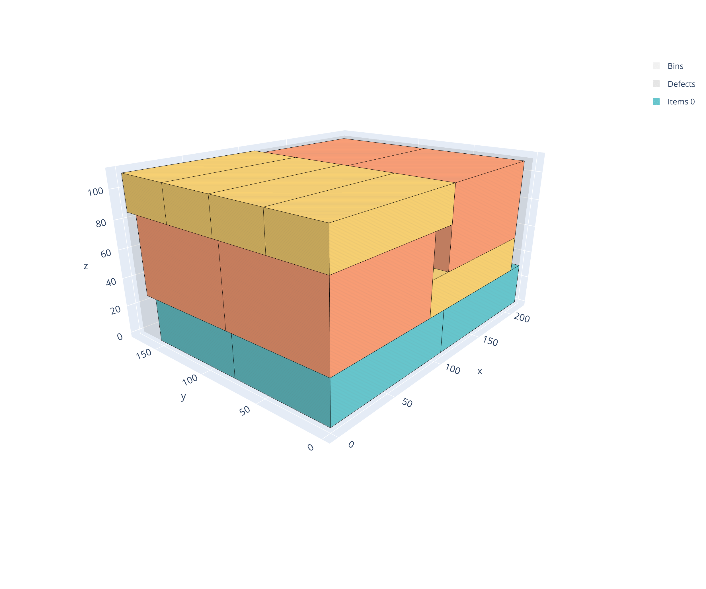

box solver¶
The box solver solves three-dimensional bin packing problems where items are rectangular parallelepipeds (boxes) that must be packed into rectangular bins without overlapping. Unlike the box-stacks solver, items are placed freely in 3D space — they are not restricted to vertical stacks and do not need to share a footprint.

These problems occur for example in container loading, truck loading, and warehouse picking.
Features:
Objectives:
Knapsack
Bin packing
Bin packing with leftovers
Open dimension X
Open dimension Y
Open dimension Z
Variable-sized bin packing
Select allowed item rotations (among the 6 possible rotations)
Maximum weight in bins
Basic usage¶
An instance is described in the JSON format below. The online solver downloads its instances in this format (Download) and loads them (Load a JSON file), the command-line solver reads them (--input), and the Python package and the C++ library read them with InstanceBuilder.read. Instances can also be built directly with the InstanceBuilder of the Python package and of the C++ library.
In the following example, the items of three item types are packed in a bin of size 216 × 173 × 110, maximizing the volume of the items packed:
Open the example in the online solver: Basic example, then click Solve.
{
"objective": "knapsack",
"bin_types": [
{"x": 216, "y": 173, "z": 110}
],
"item_types": [
{"x": 108, "y": 76, "z": 30, "copies": 20},
{"x": 110, "y": 43, "z": 25, "copies": 20},
{"x": 92, "y": 81, "z": 55, "copies": 20}
]
}
Solve it with the command-line solver:
packingsolver_box \
--input instance.json \
--certificate solution.csv \
--time-limit 5
import packingsolver.box as psb
instance_builder = psb.InstanceBuilder()
instance_builder.set_objective(psb.Objective.Knapsack)
instance_builder.add_bin_type(216, 173, 110)
instance_builder.add_item_type(108, 76, 30, copies=20)
instance_builder.add_item_type(110, 43, 25, copies=20)
instance_builder.add_item_type(92, 81, 55, copies=20)
instance = instance_builder.build()
Solve it:
parameters = psb.OptimizeParameters()
parameters.time_limit = 5
output = psb.optimize(instance, parameters)
output.solution.write("solution.csv")
#include "packingsolver/box/instance_builder.hpp"
using namespace packingsolver;
using namespace packingsolver::box;
InstanceBuilder instance_builder;
instance_builder.set_objective(Objective::Knapsack);
instance_builder.add_bin_type(216, 173, 110);
ItemTypeId item_type_id = instance_builder.add_item_type(108, 76, 30);
instance_builder.set_item_type_copies(item_type_id, 20);
item_type_id = instance_builder.add_item_type(110, 43, 25);
instance_builder.set_item_type_copies(item_type_id, 20);
item_type_id = instance_builder.add_item_type(92, 81, 55);
instance_builder.set_item_type_copies(item_type_id, 20);
Instance instance = instance_builder.build();
Solve it:
#include "packingsolver/box/optimize.hpp"
OptimizeParameters parameters;
parameters.timer.set_time_limit(5);
box::Output output = optimize(instance, parameters);
output.solution_pool.best().write("solution.csv");
Link the target PackingSolver::box of the CMake project.
The solution:


Instance format¶
An instance is a JSON object with the following fields:
Field |
Description |
|---|---|
|
Mandatory. One of |
|
How the leftover of the last bin is measured, for the |
|
Mandatory. The bin types (array) |
|
Mandatory. The item types (array) |
A bin type has the following fields:
Field |
Description |
|---|---|
|
Mandatory. The dimensions of the bins (integers); |
|
The number of copies of the bin type. Default: |
|
The minimum number of copies of the bin type to use, for the variable-sized bin packing objective. Default: |
|
The cost of a bin of this type, for the variable-sized bin packing objective. Default: the volume of the bin |
|
See Maximum total weight in a bin. Default: no limit |
An item type has the following fields:
Field |
Description |
|---|---|
|
Mandatory. The dimensions of the items (integers) |
|
The number of copies of the item type. Default: |
|
The minimum number of copies of the item type to pack, for the knapsack objective. Default: |
|
The profit of an item of this type, for the knapsack objective. Default: the volume of the item |
|
See Item rotations. Default: |
|
See Maximum total weight in a bin. Default: |
In Python, the optional fields of the bin types and of the item types are keyword arguments of InstanceBuilder.add_bin_type and InstanceBuilder.add_item_type, with the same names. In C++, they are set with the InstanceBuilder.set_bin_type_<field> and InstanceBuilder.set_item_type_<field> methods; the examples below show the exceptions.
Certificate format¶
The solution is written (command-line option --certificate, Solution.write) as a CSV file with the columns TYPE, ID, COPIES, BIN, X, Y, Z, LX, LY, LZ, ROTATION. Each line is:
a bin (
TYPEBIN):IDis its bin type,COPIESthe number of identical bins it stands for,BINits index in the solution, andLX,LY,LZits dimensions;an item (
TYPEITEM):IDis its item type,BINthe index of its bin,X,Y,Zthe position of its corner of smallest coordinates,LX,LY,LZits dimensions once placed, andROTATIONits rotation.
TYPE,ID,COPIES,BIN,X,Y,Z,LX,LY,LZ,ROTATION
BIN,0,1,0,0,0,0,216,173,110,
ITEM,0,1,0,0,0,0,108,76,30,XYZ
ITEM,2,1,0,0,0,30,92,81,55,XYZ
ITEM,1,1,0,0,0,85,110,43,25,XYZ
ITEM,0,1,0,108,0,0,108,76,30,XYZ
ITEM,1,1,0,92,0,30,110,43,25,XYZ
ITEM,2,1,0,110,0,55,92,81,55,XYZ
To visualize a solution, open it in the solution viewer, or run:
python3 scripts/visualize.py solution.csv
Item rotations¶
By default, the items keep their original orientation. The allowed rotations of an item type are given among the six possible rotations of a box:
Rotation |
X direction |
Y direction |
Z direction (vertical) |
|---|---|---|---|
|
x |
y |
z |
|
y |
x |
z |
|
z |
y |
x |
|
y |
z |
x |
|
x |
z |
y |
|
z |
x |
y |
Common combinations:
XYZ: only the original orientation (default)XYZandYXZ: the Z face always on topXYZ,YXZ,ZYXandYZX: the Y face never on topXYZ,YXZ,XZYandZXY: the X face never on topall six rotations
In the Item types table, check the allowed rotations of each item type.
In an item type: "rotations": ["XYZ", "XZY"].
instance_builder.add_item_type(x, y, z, rotations=[psb.Rotation.XYZ, psb.Rotation.XZY])
instance_builder.add_item_type_rotation(item_type_id, Rotation::XZY);, once for each allowed rotation.
In the following example, a 10 × 10 × 6 item and a 10 × 4 × 6 item are packed in bins of size 10 × 10 × 10 (bin-packing objective). The first item fills the bottom of a bin, leaving a 10 × 10 × 4 gap on top. When the items keep their orientation, the second item is 6 high and doesn’t fit in that gap, so a second bin is needed. When the rotation XZY is allowed for the second item, it is turned on its side (10 × 6 × 4) and fits in the gap: both items are packed in a single bin.
Oriented items |
Items which can be rotated |
|---|---|


Open the examples in the online solver: Item rotations: oriented items, Item rotations: items which can be rotated.
{
"objective": "bin-packing",
"bin_types": [
{"x": 10, "y": 10, "z": 10, "copies": 2}
],
"item_types": [
{"x": 10, "y": 10, "z": 6},
{"x": 10, "y": 4, "z": 6}
]
}
{
"objective": "bin-packing",
"bin_types": [
{"x": 10, "y": 10, "z": 10, "copies": 2}
],
"item_types": [
{"x": 10, "y": 10, "z": 6, "rotations": ["XYZ"]},
{"x": 10, "y": 4, "z": 6, "rotations": ["XYZ", "XZY"]}
]
}
import packingsolver.box as psb
instance_builder = psb.InstanceBuilder()
instance_builder.set_objective(psb.Objective.BinPacking)
instance_builder.add_bin_type(10, 10, 10, copies=2)
instance_builder.add_item_type(10, 10, 6)
instance_builder.add_item_type(10, 4, 6)
instance = instance_builder.build()
import packingsolver.box as psb
instance_builder = psb.InstanceBuilder()
instance_builder.set_objective(psb.Objective.BinPacking)
instance_builder.add_bin_type(10, 10, 10, copies=2)
instance_builder.add_item_type(10, 10, 6, rotations=[psb.Rotation.XYZ])
instance_builder.add_item_type(
10,
4,
6,
rotations=[psb.Rotation.XYZ, psb.Rotation.XZY],
)
instance = instance_builder.build()
#include "packingsolver/box/instance_builder.hpp"
using namespace packingsolver;
using namespace packingsolver::box;
InstanceBuilder instance_builder;
instance_builder.set_objective(Objective::BinPacking);
BinTypeId bin_type_id = instance_builder.add_bin_type(10, 10, 10);
instance_builder.set_bin_type_copies(bin_type_id, 2);
instance_builder.add_item_type(10, 10, 6);
instance_builder.add_item_type(10, 4, 6);
Instance instance = instance_builder.build();
#include "packingsolver/box/instance_builder.hpp"
using namespace packingsolver;
using namespace packingsolver::box;
InstanceBuilder instance_builder;
instance_builder.set_objective(Objective::BinPacking);
BinTypeId bin_type_id = instance_builder.add_bin_type(10, 10, 10);
instance_builder.set_bin_type_copies(bin_type_id, 2);
ItemTypeId item_type_id = instance_builder.add_item_type(10, 10, 6);
instance_builder.add_item_type_rotation(item_type_id, Rotation::XYZ);
item_type_id = instance_builder.add_item_type(10, 4, 6);
instance_builder.add_item_type_rotation(item_type_id, Rotation::XYZ);
instance_builder.add_item_type_rotation(item_type_id, Rotation::XZY);
Instance instance = instance_builder.build();
Maximum total weight in a bin¶
Each bin type may have a maximum weight: the total weight of the items packed in a bin must not exceed it.
Fill the Weight column of the Item types table, and the Maximum weight column of the Bin types table.
In an item type: "weight": 100; in a bin type: "maximum_weight": 200.
instance_builder.add_item_type(x, y, z, weight=100) and instance_builder.add_bin_type(x, y, z, maximum_weight=200)
instance_builder.set_item_type_weight(item_type_id, 100); and instance_builder.set_bin_type_maximum_weight(bin_type_id, 200);
In the following example, 4 items of size 10 × 10 × 10 and of weight 100 are packed in bins of size 20 × 20 × 10. Without a maximum weight, the 4 items (total weight 400) fit in a single bin, as a 2 × 2 grid. With a maximum weight of 200, at most 2 items can share a bin, so 2 bins are needed.
Without maximum weight |
With maximum weight |
|---|---|


Open the examples in the online solver: Maximum weight: without maximum weight, Maximum weight: with maximum weight.
{
"objective": "bin-packing",
"bin_types": [
{"x": 20, "y": 20, "z": 10, "copies": 10}
],
"item_types": [
{"x": 10, "y": 10, "z": 10, "copies": 4, "weight": 100}
]
}
{
"objective": "bin-packing",
"bin_types": [
{"x": 20, "y": 20, "z": 10, "copies": 10, "maximum_weight": 200}
],
"item_types": [
{"x": 10, "y": 10, "z": 10, "copies": 4, "weight": 100}
]
}
import packingsolver.box as psb
instance_builder = psb.InstanceBuilder()
instance_builder.set_objective(psb.Objective.BinPacking)
instance_builder.add_bin_type(20, 20, 10, copies=10)
instance_builder.add_item_type(10, 10, 10, weight=100, copies=4)
instance = instance_builder.build()
import packingsolver.box as psb
instance_builder = psb.InstanceBuilder()
instance_builder.set_objective(psb.Objective.BinPacking)
instance_builder.add_bin_type(20, 20, 10, maximum_weight=200, copies=10)
instance_builder.add_item_type(10, 10, 10, weight=100, copies=4)
instance = instance_builder.build()
#include "packingsolver/box/instance_builder.hpp"
using namespace packingsolver;
using namespace packingsolver::box;
InstanceBuilder instance_builder;
instance_builder.set_objective(Objective::BinPacking);
BinTypeId bin_type_id = instance_builder.add_bin_type(20, 20, 10);
instance_builder.set_bin_type_copies(bin_type_id, 10);
ItemTypeId item_type_id = instance_builder.add_item_type(10, 10, 10);
instance_builder.set_item_type_weight(item_type_id, 100);
instance_builder.set_item_type_copies(item_type_id, 4);
Instance instance = instance_builder.build();
#include "packingsolver/box/instance_builder.hpp"
using namespace packingsolver;
using namespace packingsolver::box;
InstanceBuilder instance_builder;
instance_builder.set_objective(Objective::BinPacking);
BinTypeId bin_type_id = instance_builder.add_bin_type(20, 20, 10);
instance_builder.set_bin_type_maximum_weight(bin_type_id, 200);
instance_builder.set_bin_type_copies(bin_type_id, 10);
ItemTypeId item_type_id = instance_builder.add_item_type(10, 10, 10);
instance_builder.set_item_type_weight(item_type_id, 100);
instance_builder.set_item_type_copies(item_type_id, 4);
Instance instance = instance_builder.build();